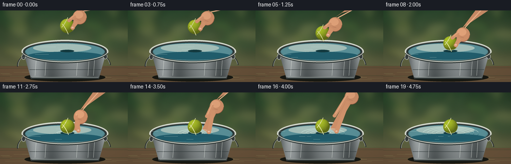
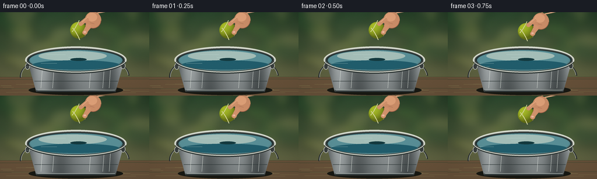
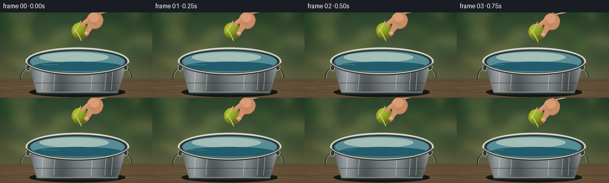
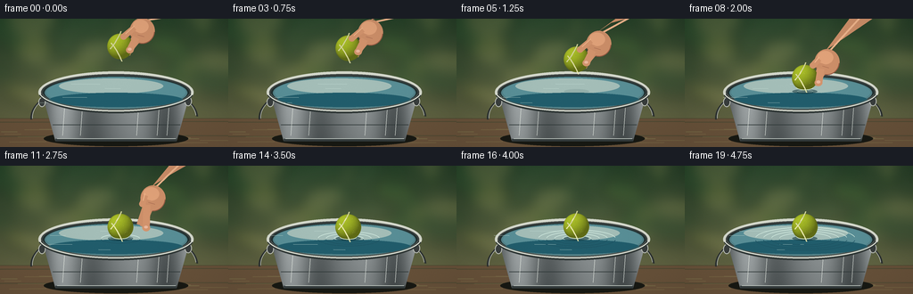

CODING AGENTS AS PIXEL WORLD MODELS
traex/GPT-5.6-Sol · phygen_008
点击播放 · 原生 RGB 像素
逐轮保存的候选
回放视频、检查图与代码变化。
每份候选均可单独播放。实际图片检查记录在下方工具轨迹中。
候选 01播放与检查图
点击播放 · 原生 RGB 像素


展开代码变化
--- 上一保存版本
+++ 本次保存版本
@@ -0,0 +1,259 @@
+from pathlib import Path
+import math
+import numpy as np
+from PIL import Image, ImageDraw, ImageFilter
+import artifact_io
+
+W,H,N,S = 256,144,20,4
+RW,RH = W*S,H*S
+rng = np.random.default_rng(1234)
+
+def sc(v): return int(round(v*S))
+def pts(seq): return [(sc(x),sc(y)) for x,y in seq]
+def box(b): return tuple(sc(x) for x in b)
+
+def smooth(a,b,x):
+ if x<=a:return 0.0
+ if x>=b:return 1.0
+ q=(x-a)/(b-a)
+ return q*q*(3-2*q)
+
+def ellipse_arc(draw,b,start,end,fill,width=1):
+ draw.arc(box(b),start=start,end=end,fill=fill,width=max(1,sc(width)))
+
+def make_background():
+ yy,xx=np.mgrid[0:RH,0:RW]
+ # Shallow-depth-of-field garden, brightest around the bucket.
+ top=np.array([46,76,48.],float); bot=np.array([121,116,78.],float)
+ t=(yy/(RH-1))[...,None]
+ a=top*(1-t)+bot*t
+ vign=np.clip(((xx-RW*.50)/(RW*.78))**2+((yy-RH*.48)/(RH*.85))**2,0,1)[...,None]
+ a=a*(1-.22*vign)
+ a=np.broadcast_to(a,(RH,RW,3)).copy()
+ # distant soft vertical foliage
+ bg=Image.fromarray(np.uint8(np.clip(a,0,255)),'RGB')
+ blobs=Image.new('RGBA',(RW,RH),(0,0,0,0)); d=ImageDraw.Draw(blobs,'RGBA')
+ colors=[(34,73,39,95),(76,110,48,90),(144,145,70,80),(25,61,37,75),(184,174,105,55)]
+ rr=np.random.default_rng(44)
+ for _ in range(42):
+ x=rr.uniform(-15,271); y=rr.uniform(-12,91); r=rr.uniform(7,29)
+ col=colors[rr.integers(len(colors))]
+ d.ellipse(box((x-r,y-r*.65,x+r,y+r*.65)),fill=col)
+ blobs=blobs.filter(ImageFilter.GaussianBlur(sc(8)))
+ bg=Image.alpha_composite(bg.convert('RGBA'),blobs)
+ # horizontal old wood/table under bucket
+ wood=Image.new('RGBA',(RW,RH),(0,0,0,0)); dw=ImageDraw.Draw(wood,'RGBA')
+ dw.rectangle(box((0,112,256,144)),fill=(104,82,58,255))
+ for y in [116,132]: dw.line(pts([(0,y),(256,y-1)]),fill=(57,47,36,95),width=sc(1))
+ for _ in range(16):
+ y=rr.uniform(113,144); x=rr.uniform(0,230); ln=rr.uniform(10,55)
+ dw.line(pts([(x,y),(min(256,x+ln),y+rr.uniform(-.5,.5))]),fill=(161,132,86,rr.integers(15,42)),width=sc(.5))
+ wood=wood.filter(ImageFilter.GaussianBlur(sc(.35)))
+ bg=Image.alpha_composite(bg,wood)
+ return bg
+
+BACKGROUND=make_background()
+
+def body_and_water(im,frame):
+ d=ImageDraw.Draw(im,'RGBA')
+ # soft contact shadow on table
+ d.ellipse(box((49,126,211,143)),fill=(24,25,19,75))
+ # wire handle behind pail
+ ellipse_arc(d,(34,69,222,153),177,358,(45,50,49,150),2.0)
+ ellipse_arc(d,(36,70,220,151),178,357,(188,193,184,100),.65)
+ # pail body, tapered galvanized steel
+ mask=Image.new('L',(RW,RH),0); md=ImageDraw.Draw(mask)
+ md.polygon(pts([(46,80),(214,80),(198,137),(62,137)]),fill=255)
+ yy,xx=np.mgrid[0:RH,0:RW]
+ xn=xx/RW
+ metal=np.zeros((RH,RW,4),dtype=np.uint8)
+ bands=112 + 32*np.sin((xn*7.3+0.35)*math.pi) + 14*np.sin(xn*31)
+ vert=-20*np.clip((yy/RH-.57)/.4,0,1)
+ metal[...,0]=np.clip(bands+vert+12,55,195)
+ metal[...,1]=np.clip(bands+vert+18,65,202)
+ metal[...,2]=np.clip(bands+vert+19,68,204)
+ metal[...,3]=np.array(mask)
+ layer=Image.fromarray(metal,'RGBA')
+ im.alpha_composite(layer)
+ d=ImageDraw.Draw(im,'RGBA')
+ # bottom rolled rim and seams
+ d.line(pts([(62,136),(198,136)]),fill=(53,61,62,210),width=sc(3))
+ d.line(pts([(64,134.5),(197,134.5)]),fill=(202,210,203,130),width=sc(.8))
+ d.line(pts([(52,91),(207,91)]),fill=(225,232,224,35),width=sc(.7))
+ d.line(pts([(59,119),(202,119)]),fill=(49,58,58,35),width=sc(.8))
+ # subtle metal streaks
+ for x,alpha in [(73,55),(93,28),(156,45),(179,35),(190,50)]:
+ d.line(pts([(x,88),(x-3,131)]),fill=(230,236,229,alpha),width=sc(.6))
+ # side handle eyelets
+ d.ellipse(box((43,88,51,99)),fill=(57,62,61,255),outline=(188,192,184,220),width=sc(1))
+ d.ellipse(box((207,87,215,98)),fill=(57,62,61,255),outline=(188,192,184,220),width=sc(1))
+ # black interior under water then reflective water plane
+ d.ellipse(box((45,61,215,105)),fill=(32,48,48,255))
+ # rim outside before water
+ d.ellipse(box((43,59,217,106)),outline=(212,216,204,255),width=sc(4))
+ d.ellipse(box((46,62,214,103)),outline=(62,68,66,230),width=sc(2))
+ # water
+ d.ellipse(box((50,65,210,101)),fill=(83,130,137,255))
+ d.ellipse(box((52,66,208,99)),fill=(89,143,151,235))
+ # sky reflection and soft dark front reflection
+ d.ellipse(box((66,67,183,84)),fill=(164,190,184,55))
+ d.ellipse(box((55,83,205,99)),fill=(33,93,108,40))
+ # horizontal glints animate without moving whole texture
+ phase=frame*.55
+ for k,(y,l,a) in enumerate([(73,32,95),(78,17,80),(88,27,75),(94,13,55)]):
+ x=80+38*math.sin(phase*.35+k*1.7)
+ d.line(pts([(x,y),(x+l,y+.25)]),fill=(198,223,214,a),width=sc(.55))
+ return d
+
+def draw_ripples(im,frame):
+ if frame<7:return
+ d=ImageDraw.Draw(im,'RGBA')
+ age=frame-7
+ # several outward travelling, perspective-compressed capillary rings
+ for j in range(4):
+ a=age-j*2.1
+ if a<0: continue
+ r=5+a*4.3
+ alpha=int(max(0,125-a*8))
+ cy=82
+ # pale near-facing half plus dark far-facing half
+ b=(135-r,cy-r*.235,135+r,cy+r*.235)
+ ellipse_arc(d,b,190,350,(210,235,224,alpha),.8)
+ ellipse_arc(d,b,8,172,(31,85,100,int(alpha*.65)),.7)
+ # tiny contact meniscus
+ if frame<=12:
+ r=7+(frame-7)*.7
+ ellipse_arc(d,(135-r,78-r*.18,135+r,78+r*.18),180,358,(222,239,224,170),1)
+
+def hand_state(frame,ballx,bally):
+ # hand tracks ball through placement, then opens and withdraws upper-right
+ rel=smooth(8,13,frame)
+ retreat=smooth(10,19,frame)
+ hx=ballx+22 + 45*retreat
+ hy=bally-17 - 55*retreat
+ return hx,hy,rel,retreat
+
+def draw_hand_base(im,frame,bx,by):
+ hx,hy,rel,ret=hand_state(frame,bx,by)
+ if ret>0.90:return
+ d=ImageDraw.Draw(im,'RGBA')
+ alpha=int(255*min(1,(1-ret)*4))
+ # forearm from upper-right; layered shapes give rounded anatomical silhouette
+ skin=(205,143,105,alpha); light=(232,174,132,alpha); shadow=(152,91,68,alpha)
+ # arm behind palm
+ d.polygon(pts([(hx+2,hy-14),(hx+17,hy-24),(222+45*ret,-8-25*ret),(192+42*ret,-10-25*ret)]),fill=skin)
+ d.line(pts([(hx+5,hy-12),(199+43*ret,-4-24*ret)]),fill=(240,182,141,int(alpha*.52)),width=sc(2))
+ # palm
+ d.ellipse(box((hx-11,hy-15,hx+17,hy+14)),fill=skin)
+ d.ellipse(box((hx-8,hy-13,hx+10,hy+2)),fill=(226,163,122,int(alpha*.75)))
+ # lower side of palm shadow
+ ellipse_arc(d,(hx-11,hy-15,hx+17,hy+14),5,155,shadow,1)
+ # rear fingers cupping left side, partly hidden by ball later
+ spread=rel*10
+ d.line(pts([(hx-3,hy+1),(bx+8+spread,by+9-rel*2)]),fill=skin,width=sc(7))
+ d.line(pts([(hx+3,hy+4),(bx+11+spread,by+4+rel*5)]),fill=skin,width=sc(6))
+ return (hx,hy,rel,ret,alpha)
+
+def ball_sprite(radius=14):
+ size=sc(radius*2+6); c=size//2
+ yy,xx=np.mgrid[0:size,0:size]
+ dx=(xx-c)/S; dy=(yy-c)/S
+ rr=np.sqrt(dx*dx+dy*dy)
+ mask=np.clip((radius+.65-rr)*2.2,0,1)
+ # spherical illumination: top-left soft key and lower-right occlusion
+ nx=dx/radius; ny=dy/radius
+ nz=np.sqrt(np.clip(1-nx*nx-ny*ny,0,1))
+ light=.52+.42*np.clip(-.42*nx-.57*ny+.70*nz,0,1)
+ base=np.zeros((size,size,4),dtype=np.uint8)
+ grain=np.random.default_rng(901).normal(0,3,(size,size))
+ base[...,0]=np.clip(183*light+grain,0,255)
+ base[...,1]=np.clip(205*light+grain,0,255)
+ base[...,2]=np.clip(43*light+grain*.5,0,255)
+ base[...,3]=np.uint8(mask*255)
+ sp=Image.fromarray(base,'RGBA')
+ # tennis seams are two broad, curved ivory arcs
+ sd=ImageDraw.Draw(sp,'RGBA')
+ def p(x,y): return (int(c+x*S),int(c+y*S))
+ curve1=[p(-10+i*.7,-9+0.052*(i*.7+10)**2) for i in range(29)]
+ curve2=[p(-11+i*.72,8-0.050*(i*.72+10)**2) for i in range(29)]
+ sd.line(curve1,fill=(237,235,174,225),width=sc(1.25),joint='curve')
+ sd.line(curve2,fill=(237,235,174,215),width=sc(1.15),joint='curve')
+ # a few tiny felt highlights
+ rrng=np.random.default_rng(777)
+ for _ in range(40):
+ x,y=rrng.uniform(-12,12,2)
+ if x*x+y*y<145:
+ sd.point(p(x,y),fill=(235,240,105,rrng.integers(35,95)))
+ return sp
+BALL=ball_sprite()
+
+def draw_ball(im,bx,by,frame):
+ # water-contact shadow strengthens as the ball nears the surface
+ d=ImageDraw.Draw(im,'RGBA')
+ near=smooth(4,9,frame)
+ d.ellipse(box((bx-14,79,bx+14,84)),fill=(20,58,63,int(65*near)))
+ im.alpha_composite(BALL,(sc(bx-17),sc(by-17)))
+ # Wet lower edge after contact
+ if frame>=8:
+ d=ImageDraw.Draw(im,'RGBA')
+ ellipse_arc(d,(bx-10,by+7,bx+10,by+14),12,168,(215,236,216,125),.65)
+
+def draw_front_fingers(im,frame,bx,by,state):
+ if not state:return
+ hx,hy,rel,ret,alpha=state
+ if ret>.90:return
+ d=ImageDraw.Draw(im,'RGBA')
+ skin=(211,148,109,alpha); hi=(239,181,139,int(alpha*.72)); nail=(235,184,157,int(alpha*.85))
+ # index finger initially lies over top of ball, then uncurls to the right
+ tipx=bx+4+rel*20; tipy=by-11-rel*10
+ d.line(pts([(hx-6,hy-4),(tipx,tipy)]),fill=skin,width=sc(7))
+ d.line(pts([(hx-6,hy-6),(tipx,tipy-1)]),fill=hi,width=sc(1))
+ d.ellipse(box((tipx-3.7,tipy-3.5,tipx+3.7,tipy+3.5)),fill=skin)
+ # thumb touching right side, rotates away during release
+ tx=bx+11+rel*17; ty=by+4+rel*7
+ d.line(pts([(hx-4,hy+7),(tx,ty)]),fill=skin,width=sc(8))
+ d.ellipse(box((tx-4.3,ty-3.8,tx+4.3,ty+3.8)),fill=skin)
+ d.ellipse(box((tx-2.3,ty-2.4,tx+2.0,ty+.7)),fill=nail)
+ # knuckle folds
+ d.line(pts([(hx-2,hy+4),(hx+5,hy+6)]),fill=(137,80,63,int(alpha*.42)),width=sc(.6))
+
+def foreground_rim(im):
+ d=ImageDraw.Draw(im,'RGBA')
+ # foreground lip overlays water and makes bucket's depth unmistakable
+ ellipse_arc(d,(43,59,217,106),8,172,(48,56,55,230),3.2)
+ ellipse_arc(d,(43,58,217,104),8,172,(222,225,213,255),1.4)
+ ellipse_arc(d,(47,62,213,102),8,172,(89,99,95,190),.8)
+
+def frame_image(i):
+ im=BACKGROUND.copy()
+ d=body_and_water(im,i)
+ # trajectory: controlled descent, then buoyant damped bobbing
+ if i<=2:
+ y=31.0
+ elif i<=9:
+ u=smooth(2,9,i); y=31+37*u
+ else:
+ a=i-9; y=68 + 2.0*math.exp(-a/5.2)*math.sin(a*1.45)
+ x=134.5 + (0 if i<9 else .55*math.sin((i-9)*.7)*math.exp(-(i-9)/8))
+ state=draw_hand_base(im,i,x,y)
+ draw_ripples(im,i)
+ draw_ball(im,x,y,i)
+ draw_front_fingers(im,i,x,y,state)
+ foreground_rim(im)
+ # rim should not cover ball: restore ball overlap only where ball is above lip would be ideal;
+ # ball is centered well above the lip, so the foreground arc touches only its lowest edge naturally.
+ # subtle lens vignette and fine fixed film grain
+ arr=np.asarray(im.convert('RGB')).astype(np.float32)
+ yy,xx=np.mgrid[0:RH,0:RW]
+ vig=1-.10*np.clip(((xx-RW/2)/(RW*.72))**2+((yy-RH/2)/(RH*.78))**2,0,1)
+ arr*=vig[...,None]
+ noise=np.random.default_rng(500+i).normal(0,0.8,arr.shape[:2])[...,None]
+ arr=np.clip(arr+noise,0,255).astype(np.uint8)
+ out=Image.fromarray(arr).resize((W,H),Image.Resampling.LANCZOS)
+ return np.asarray(out,dtype=np.uint8)
+
+def main():
+ frames=np.stack([frame_image(i) for i in range(N)])
+ artifact_io.save(frames,Path(__file__).resolve().parent)
+
+if __name__=='__main__': main()
候选 02播放与检查图
点击播放 · 原生 RGB 像素


展开代码变化
--- 上一保存版本
+++ 本次保存版本
@@ -127,8 +127,8 @@
def hand_state(frame,ballx,bally):
# hand tracks ball through placement, then opens and withdraws upper-right
- rel=smooth(8,13,frame)
- retreat=smooth(10,19,frame)
+ rel=smooth(7,10,frame)
+ retreat=smooth(9,15,frame)
hx=ballx+22 + 45*retreat
hy=bally-17 - 55*retreat
return hx,hy,rel,retreat
@@ -150,8 +150,12 @@
ellipse_arc(d,(hx-11,hy-15,hx+17,hy+14),5,155,shadow,1)
# rear fingers cupping left side, partly hidden by ball later
spread=rel*10
- d.line(pts([(hx-3,hy+1),(bx+8+spread,by+9-rel*2)]),fill=skin,width=sc(7))
- d.line(pts([(hx+3,hy+4),(bx+11+spread,by+4+rel*5)]),fill=skin,width=sc(6))
+ end1x=(bx+8+spread)*(1-ret)+(hx-3)*ret
+ end1y=(by+9-rel*2)*(1-ret)+(hy+3)*ret
+ end2x=(bx+11+spread)*(1-ret)+(hx+1)*ret
+ end2y=(by+4+rel*5)*(1-ret)+(hy+6)*ret
+ d.line(pts([(hx-3,hy+1),(end1x,end1y)]),fill=skin,width=sc(7))
+ d.line(pts([(hx+3,hy+4),(end2x,end2y)]),fill=skin,width=sc(6))
return (hx,hy,rel,ret,alpha)
def ball_sprite(radius=14):
@@ -191,7 +195,11 @@
# water-contact shadow strengthens as the ball nears the surface
d=ImageDraw.Draw(im,'RGBA')
near=smooth(4,9,frame)
- d.ellipse(box((bx-14,79,bx+14,84)),fill=(20,58,63,int(65*near)))
+ if near > 0.01:
+ # A restrained contact shadow on a separate compositing layer.
+ shadow=Image.new('RGBA',(RW,RH),(0,0,0,0))
+ ImageDraw.Draw(shadow).ellipse(box((bx-14,79,bx+14,84)),fill=(16,53,59,int(58*near)))
+ im.alpha_composite(shadow)
im.alpha_composite(BALL,(sc(bx-17),sc(by-17)))
# Wet lower edge after contact
if frame>=8:
@@ -205,12 +213,14 @@
d=ImageDraw.Draw(im,'RGBA')
skin=(211,148,109,alpha); hi=(239,181,139,int(alpha*.72)); nail=(235,184,157,int(alpha*.85))
# index finger initially lies over top of ball, then uncurls to the right
- tipx=bx+4+rel*20; tipy=by-11-rel*10
+ tipx=(bx+4+rel*20)*(1-ret)+(hx-7)*ret
+ tipy=(by-11-rel*10)*(1-ret)+(hy-7)*ret
d.line(pts([(hx-6,hy-4),(tipx,tipy)]),fill=skin,width=sc(7))
d.line(pts([(hx-6,hy-6),(tipx,tipy-1)]),fill=hi,width=sc(1))
d.ellipse(box((tipx-3.7,tipy-3.5,tipx+3.7,tipy+3.5)),fill=skin)
# thumb touching right side, rotates away during release
- tx=bx+11+rel*17; ty=by+4+rel*7
+ tx=(bx+11+rel*17)*(1-ret)+(hx-2)*ret
+ ty=(by+4+rel*7)*(1-ret)+(hy+5)*ret
d.line(pts([(hx-4,hy+7),(tx,ty)]),fill=skin,width=sc(8))
d.ellipse(box((tx-4.3,ty-3.8,tx+4.3,ty+3.8)),fill=skin)
d.ellipse(box((tx-2.3,ty-2.4,tx+2.0,ty+.7)),fill=nail)
可观测工具轨迹
实际执行的命令与返回图片。
命令 1exit 0
/bin/bash -lc "cat prompt.txt && printf '\\n--- GENERATION_RULES ---\\n' && cat GENERATION_RULES.md && printf '\\n--- TASK_SPEC ---\\n' && cat task_spec.json"
命令 2exit 0
/bin/bash -lc "find . -maxdepth 2 -type f -printf '%p\\n' | sort && printf '\\n--- tools ---\\n' && command -v ffmpeg || true && command -v blender || true && command -v python3 || true && command -v convert || true"
命令 3exit 0
/bin/bash -lc 'cat artifact_io.py'
命令 4exit 0
/bin/bash -lc "cat > generate.py <<'PY'
from pathlib import Path
import math
import numpy as np
from PIL import Image, ImageDraw, ImageFilter
import artifact_io
W,H,N,S = 256,144,20,4
RW,RH = W*S,H*S
rng = np.random.default_rng(1234)
def sc(v): return int(round(v*S))
def pts(seq): return [(sc(x),sc(y)) for x,y in seq]
def box(b): return tuple(sc(x) for x in b)
def smooth(a,b,x):
if x<=a:return 0.0
if x>=b:return 1.0
q=(x-a)/(b-a)
return q*q*(3-2*q)
def ellipse_arc(draw,b,start,end,fill,width=1):
draw.arc(box(b),start=start,end=end,fill=fill,width=max(1,sc(width)))
def make_background():
yy,xx=np.mgrid[0:RH,0:RW]
# Shallow-depth-of-field garden, brightest around the bucket.
top=np.array([46,76,48.],float); bot=np.array([121,116,78.],float)
t=(yy/(RH-1))[...,None]
a=top*(1-t)+bot*t
vign=np.clip(((xx-RW*.50)/(RW*.78))**2+((yy-RH*.48)/(RH*.85))**2,0,1)[...,None]
a=a*(1-.22*vign)
a=np.broadcast_to(a,(RH,RW,3)).copy()
# distant soft vertical foliage
bg=Image.fromarray(np.uint8(np.clip(a,0,255)),'RGB')
blobs=Image.new('RGBA',(RW,RH),(0,0,0,0)); d=ImageDraw.Draw(blobs,'RGBA')
colors=[(34,73,39,95),(76,110,48,90),(144,145,70,80),(25,61,37,75),(184,174,105,55)]
rr=np.random.default_rng(44)
for _ in range(42):
x=rr.uniform(-15,271); y=rr.uniform(-12,91); r=rr.uniform(7,29)
col=colors[rr.integers(len(colors))]
d.ellipse(box((x-r,y-r*.65,x+r,y+r*.65)),fill=col)
blobs=blobs.filter(ImageFilter.GaussianBlur(sc(8)))
bg=Image.alpha_composite(bg.convert('RGBA'),blobs)
# horizontal old wood/table under bucket
wood=Image.new('RGBA',(RW,RH),(0,0,0,0)); dw=ImageDraw.Draw(wood,'RGBA')
dw.rectangle(box((0,112,256,144)),fill=(104,82,58,255))
for y in [116,132]: dw.line(pts([(0,y),(256,y-1)]),fill=(57,47,36,95),width=sc(1))
for _ in range(16):
y=rr.uniform(113,144); x=rr.uniform(0,230); ln=rr.uniform(10,55)
dw.line(pts([(x,y),(min(256,x+ln),y+rr.uniform(-.5,.5))]),fill=(161,132,86,rr.integers(15,42)),width=sc(.5))
wood=wood.filter(ImageFilter.GaussianBlur(sc(.35)))
bg=Image.alpha_composite(bg,wood)
return bg
BACKGROUND=make_background()
def body_and_water(im,frame):
d=ImageDraw.Draw(im,'RGBA')
# soft contact shadow on table
d.ellipse(box((49,126,211,143)),fill=(24,25,19,75))
# wire handle behind pail
ellipse_arc(d,(34,69,222,153),177,358,(45,50,49,150),2.0)
ellipse_arc(d,(36,70,220,151),178,357,(188,193,184,100),.65)
# pail body, tapered galvanized steel
mask=Image.new('L',(RW,RH),0); md=ImageDraw.Draw(mask)
md.polygon(pts([(46,80),(214,80),(198,137),(62,137)]),fill=255)
yy,xx=np.mgrid[0:RH,0:RW]
xn=xx/RW
metal=np.zeros((RH,RW,4),dtype=np.uint8)
bands=112 + 32*np.sin((xn*7.3+0.35)*math.pi) + 14*np.sin(xn*31)
vert=-20*np.clip((yy/RH-.57)/.4,0,1)
metal[...,0]=np.clip(bands+vert+12,55,195)
metal[...,1]=np.clip(bands+vert+18,65,202)
metal[...,2]=np.clip(bands+vert+19,68,204)
metal[...,3]=np.array(mask)
layer=Image.fromarray(metal,'RGBA')
im.alpha_composite(layer)
d=ImageDraw.Draw(im,'RGBA')
# bottom rolled rim and seams
d.line(pts([(62,136),(198,136)]),fill=(53,61,62,210),width=sc(3))
d.line(pts([(64,134.5),(197,134.5)]),fill=(202,210,203,130),width=sc(.8))
d.line(pts([(52,91),(207,91)]),fill=(225,232,224,35),width=sc(.7))
d.line(pts([(59,119),(202,119)]),fill=(49,58,58,35),width=sc(.8))
# subtle metal streaks
for x,alpha in [(73,55),(93,28),(156,45),(179,35),(190,50)]:
d.line(pts([(x,88),(x-3,131)]),fill=(230,236,229,alpha),width=sc(.6))
# side handle eyelets
d.ellipse(box((43,88,51,99)),fill=(57,62,61,255),outline=(188,192,184,220),width=sc(1))
d.ellipse(box((207,87,215,98)),fill=(57,62,61,255),outline=(188,192,184,220),width=sc(1))
# black interior under water then reflective water plane
d.ellipse(box((45,61,215,105)),fill=(32,48,48,255))
# rim outside before water
d.ellipse(box((43,59,217,106)),outline=(212,216,204,255),width=sc(4))
d.ellipse(box((46,62,214,103)),outline=(62,68,66,230),width=sc(2))
# water
d.ellipse(box((50,65,210,101)),fill=(83,130,137,255))
d.ellipse(box((52,66,208,99)),fill=(89,143,151,235))
# sky reflection and soft dark front reflection
d.ellipse(box((66,67,183,84)),fill=(164,190,184,55))
d.ellipse(box((55,83,205,99)),fill=(33,93,108,40))
# horizontal glints animate without moving whole texture
phase=frame*.55
for k,(y,l,a) in enumerate([(73,32,95),(78,17,80),(88,27,75),(94,13,55)]):
x=80+38*math.sin(phase*.35+k*1.7)
d.line(pts([(x,y),(x+l,y+.25)]),fill=(198,223,214,a),width=sc(.55))
return d
def draw_ripples(im,frame):
if frame<7:return
d=ImageDraw.Draw(im,'RGBA')
age=frame-7
# several outward travelling, perspective-compressed capillary rings
for j in range(4):
a=age-j*2.1
if a<0: continue
r=5+a*4.3
alpha=int(max(0,125-a*8))
cy=82
# pale near-facing half plus dark far-facing half
b=(135-r,cy-r*.235,135+r,cy+r*.235)
ellipse_arc(d,b,190,350,(210,235,224,alpha),.8)
ellipse_arc(d,b,8,172,(31,85,100,int(alpha*.65)),.7)
# tiny contact meniscus
if frame<=12:
r=7+(frame-7)*.7
ellipse_arc(d,(135-r,78-r*.18,135+r,78+r*.18),180,358,(222,239,224,170),1)
def hand_state(frame,ballx,bally):
# hand tracks ball through placement, then opens and withdraws upper-right
rel=smooth(8,13,frame)
retreat=smooth(10,19,frame)
hx=ballx+22 + 45*retreat
hy=bally-17 - 55*retreat
return hx,hy,rel,retreat
def draw_hand_base(im,frame,bx,by):
hx,hy,rel,ret=hand_state(frame,bx,by)
if ret>0.90:return
d=ImageDraw.Draw(im,'RGBA')
alpha=int(255*min(1,(1-ret)*4))
# forearm from upper-right; layered shapes give rounded anatomical silhouette
skin=(205,143,105,alpha); light=(232,174,132,alpha); shadow=(152,91,68,alpha)
# arm behind palm
d.polygon(pts([(hx+2,hy-14),(hx+17,hy-24),(222+45*ret,-8-25*ret),(192+42*ret,-10-25*ret)]),fill=skin)
d.line(pts([(hx+5,hy-12),(199+43*ret,-4-24*ret)]),fill=(240,182,141,int(alpha*.52)),width=sc(2))
# palm
d.ellipse(box((hx-11,hy-15,hx+17,hy+14)),fill=skin)
d.ellipse(box((hx-8,hy-13,hx+10,hy+2)),fill=(226,163,122,int(alpha*.75)))
# lower side of palm shadow
ellipse_arc(d,(hx-11,hy-15,hx+17,hy+14),5,155,shadow,1)
# rear fingers cupping left side, partly hidden by ball later
spread=rel*10
d.line(pts([(hx-3,hy+1),(bx+8+spread,by+9-rel*2)]),fill=skin,width=sc(7))
d.line(pts([(hx+3,hy+4),(bx+11+spread,by+4+rel*5)]),fill=skin,width=sc(6))
return (hx,hy,rel,ret,alpha)
def ball_sprite(radius=14):
size=sc(radius*2+6); c=size//2
yy,xx=np.mgrid[0:size,0:size]
dx=(xx-c)/S; dy=(yy-c)/S
rr=np.sqrt(dx*dx+dy*dy)
mask=np.clip((radius+.65-rr)*2.2,0,1)
# spherical illumination: top-left soft key and lower-right occlusion
nx=dx/radius; ny=dy/radius
nz=np.sqrt(np.clip(1-nx*nx-ny*ny,0,1))
light=.52+.42*np.clip(-.42*nx-.57*ny+.70*nz,0,1)
base=np.zeros((size,size,4),dtype=np.uint8)
grain=np.random.default_rng(901).normal(0,3,(size,size))
base[...,0]=np.clip(183*light+grain,0,255)
base[...,1]=np.clip(205*light+grain,0,255)
base[...,2]=np.clip(43*light+grain*.5,0,255)
base[...,3]=np.uint8(mask*255)
sp=Image.fromarray(base,'RGBA')
# tennis seams are two broad, curved ivory arcs
sd=ImageDraw.Draw(sp,'RGBA')
def p(x,y): return (int(c+x*S),int(c+y*S))
curve1=[p(-10+i*.7,-9+0.052*(i*.7+10)**2) for i in range(29)]
curve2=[p(-11+i*.72,8-0.050*(i*.72+10)**2) for i in range(29)]
sd.line(curve1,fill=(237,235,174,225),width=sc(1.25),joint='curve')
sd.line(curve2,fill=(237,235,174,215),width=sc(1.15),joint='curve')
# a few tiny felt highlights
rrng=np.random.default_rng(777)
for _ in range(40):
x,y=rrng.uniform(-12,12,2)
if x*x+y*y<145:
sd.point(p(x,y),fill=(235,240,105,rrng.integers(35,95)))
return sp
BALL=ball_sprite()
def draw_ball(im,bx,by,frame):
# water-contact shadow strengthens as the ball nears the surface
d=ImageDraw.Draw(im,'RGBA')
near=smooth(4,9,frame)
d.ellipse(box((bx-14,79,bx+14,84)),fill=(20,58,63,int(65*near)))
im.alpha_composite(BALL,(sc(bx-17),sc(by-17)))
# Wet lower edge after contact
if frame>=8:
d=ImageDraw.Draw(im,'RGBA')
ellipse_arc(d,(bx-10,by+7,bx+10,by+14),12,168,(215,236,216,125),.65)
def draw_front_fingers(im,frame,bx,by,state):
if not state:return
hx,hy,rel,ret,alpha=state
if ret>.90:return
d=ImageDraw.Draw(im,'RGBA')
skin=(211,148,109,alpha); hi=(239,181,139,int(alpha*.72)); nail=(235,184,157,int(alpha*.85))
# index finger initially lies over top of ball, then uncurls to the right
tipx=bx+4+rel*20; tipy=by-11-rel*10
d.line(pts([(hx-6,hy-4),(tipx,tipy)]),fill=skin,width=sc(7))
d.line(pts([(hx-6,hy-6),(tipx,tipy-1)]),fill=hi,width=sc(1))
d.ellipse(box((tipx-3.7,tipy-3.5,tipx+3.7,tipy+3.5)),fill=skin)
# thumb touching right side, rotates away during release
tx=bx+11+rel*17; ty=by+4+rel*7
d.line(pts([(hx-4,hy+7),(tx,ty)]),fill=skin,width=sc(8))
d.ellipse(box((tx-4.3,ty-3.8,tx+4.3,ty+3.8)),fill=skin)
d.ellipse(box((tx-2.3,ty-2.4,tx+2.0,ty+.7)),fill=nail)
# knuckle folds
d.line(pts([(hx-2,hy+4),(hx+5,hy+6)]),fill=(137,80,63,int(alpha*.42)),width=sc(.6))
def foreground_rim(im):
d=ImageDraw.Draw(im,'RGBA')
# foreground lip overlays water and makes bucket's depth unmistakable
ellipse_arc(d,(43,59,217,106),8,172,(48,56,55,230),3.2)
ellipse_arc(d,(43,58,217,104),8,172,(222,225,213,255),1.4)
ellipse_arc(d,(47,62,213,102),8,172,(89,99,95,190),.8)
def frame_image(i):
im=BACKGROUND.copy()
d=body_and_water(im,i)
# trajectory: controlled descent, then buoyant damped bobbing
if i<=2:
y=31.0
elif i<=9:
u=smooth(2,9,i); y=31+37*u
else:
a=i-9; y=68 + 2.0*math.exp(-a/5.2)*math.sin(a*1.45)
x=134.5 + (0 if i<9 else .55*math.sin((i-9)*.7)*math.exp(-(i-9)/8))
state=draw_hand_base(im,i,x,y)
draw_ripples(im,i)
draw_ball(im,x,y,i)
draw_front_fingers(im,i,x,y,state)
foreground_rim(im)
# rim should not cover ball: restore ball overlap only where ball is above lip would be ideal;
# ball is centered well above the lip, so the foreground arc touches only its lowest edge naturally.
# subtle lens vignette and fine fixed film grain
arr=np.asarray(im.convert('RGB')).astype(np.float32)
yy,xx=np.mgrid[0:RH,0:RW]
vig=1-.10*np.clip(((xx-RW/2)/(RW*.72))**2+((yy-RH/2)/(RH*.78))**2,0,1)
arr*=vig[...,None]
noise=np.random.default_rng(500+i).normal(0,0.8,arr.shape[:2])[...,None]
arr=np.clip(arr+noise,0,255).astype(np.uint8)
out=Image.fromarray(arr).resize((W,H),Image.Resampling.LANCZOS)
return np.asarray(out,dtype=np.uint8)
def main():
frames=np.stack([frame_image(i) for i in range(N)])
artifact_io.save(frames,Path(__file__).resolve().parent)
if __name__=='__main__': main()
PY
python3 generate.py
ls -lh pixels.npz inspection.png frames/00.png frames/19.png"命令 5exit 0
/bin/bash -lc "python3 generate.py >/tmp/gen.log 2>&1 && python3 - <<'PY'
import json, numpy as np
from PIL import Image
from pathlib import Path
p=Path('.')
s=json.loads((p/'task_spec.json').read_text())
z=np.load(p/'pixels.npz')['pixels']
assert z.shape==(144,256,20),z.shape
assert all(Image.open(p/'frames'/f'{i:02d}.png').mode=='RGB' and Image.open(p/'frames'/f'{i:02d}.png').size==(256,144) for i in range(20))
# temporal differences to ensure meaningful animation
ims=np.stack([np.asarray(Image.open(p/'frames'/f'{i:02d}.png'),dtype=np.int16) for i in range(20)])
d=np.mean(np.abs(np.diff(ims,axis=0)),axis=(1,2,3))
print('validated',z.shape,'mean temporal deltas',np.round(d,2).tolist())
PY
cat /tmp/gen.log | tail -8"命令 6exit 0
/bin/bash -lc "mkdir -p .tmp && python3 generate.py >.tmp/gen.log 2>&1 && python3 - <<'PY'
import json, numpy as np
from PIL import Image
from pathlib import Path
p=Path('.')
z=np.load(p/'pixels.npz')['pixels']
assert z.shape==(144,256,20),z.shape
assert all(Image.open(p/'frames'/f'{i:02d}.png').mode=='RGB' and Image.open(p/'frames'/f'{i:02d}.png').size==(256,144) for i in range(20))
ims=np.stack([np.asarray(Image.open(p/'frames'/f'{i:02d}.png'),dtype=np.int16) for i in range(20)])
d=np.mean(np.abs(np.diff(ims,axis=0)),axis=(1,2,3))
print('validated',z.shape,'mean temporal deltas',np.round(d,2).tolist())
PY
cat .tmp/gen.log | tail -8"视觉工具实际返回图片 1

视觉工具实际返回图片 2

视觉工具实际返回图片 3

保存候选 2 份；完成命令 6 次；可验证图片返回 3 张。原始 API 响应与完整日志保留在本地。